name: heading class: center, middle, inverse --- template: heading # Kode ## Torgeir Thoresen ## <a href="http://twitter.com/torgeir">@torgeir</a> --- template: heading class: left # Agenda ## - Samarbeide om kode ## - God kode ## - Arduino-kode ## - Biblioteker ## - Klasser og Objekter ## - Bordtennis-prosjektet --- template: heading # Samarbeide om kode ## Hvordan kan vi samarbeide når kodebasen blir større --- class: center, middle # Git og Github ## Versjonskontroll og et samarbeidsverktøy for kodebaser --- class: center # Github ## for OS X 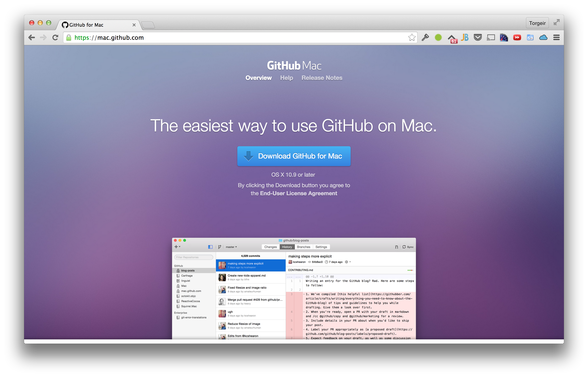 --- class: center # Github ## for Windows 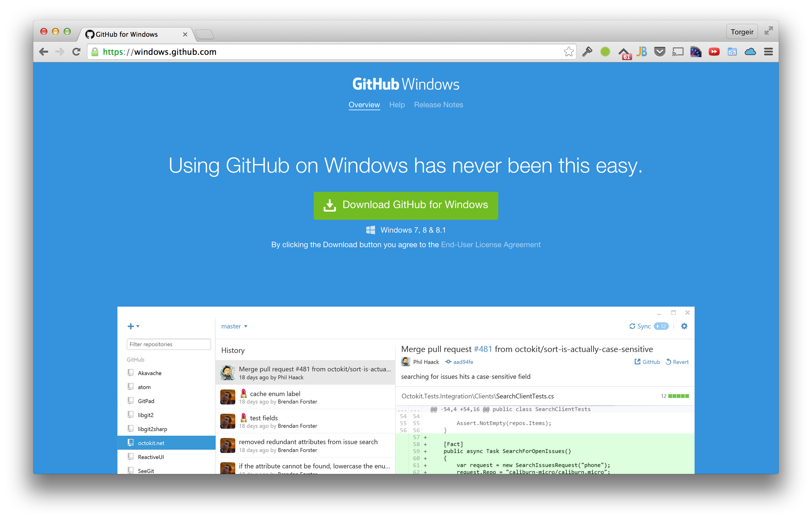 --- class: center, middle # Github ## Demo --- # Terminologi ## Repository Kildekodefiler er samlet i et repository, feks hos Github ## Branch En gren av koden, man kan ha mange parallelle grener ## Merge Å slå sammen flere grener av koden til én ## Pull request Forespørsel om å slå en gren sammen med resten av koden Vise forskjeller, endrede filer, hvem som har gjort hva Kommentere på individuelle linjer --- template: heading # God kode ## Hva er god kode for deg? --- class: center, middle <img src="wtf-per-minute.jpg" /> --- # Ryddig og enkel ## Forståelig ## Uvidbar ## Vedlikeholdbar --- # Kommuniserer godt ## Uttrykksfull ## Selvforklarende ## Kommuniserer intensjon --- # Modulær ## Ansvarsfordeling (Separation of concerns) ## Løser ikke alle problemer på én gang ## Gjør én ting, gjør det godt --- template: heading # Arduino-kode ## Kan Arduino-kode være god og gjenbrukbar? --- # Button + Led ```c const int buttonPin = 2; // the number of the pushbutton pin const int ledPin = 13; // the number of the LED pin // variables will change: int buttonState = 0; // variable for reading the pushbutton status void setup() { // initialize the LED pin as an output: pinMode(ledPin, OUTPUT); // initialize the pushbutton pin as an input: pinMode(buttonPin, INPUT); } void loop(){ // read the state of the pushbutton value: buttonState = digitalRead(buttonPin); // check if the pushbutton is pressed. // if it is, the buttonState is HIGH: if (buttonState == HIGH) { // turn LED on: digitalWrite(ledPin, HIGH); } else { // turn LED off: digitalWrite(ledPin, LOW); } } ``` --- # Button + Led ```c const int buttonPin = 2; const int ledPin = 13; void setup() { pinMode(ledPin, OUTPUT); pinMode(buttonPin, INPUT); } void loop() { if (isButtonDown()) { turnLedOn(); } else { turnLedOff(); } } bool isButtonDown() { int buttonState = digitalRead(buttonPin); return buttonState == HIGH; } void turnOnLed() { digitalWrite(ledPin, HIGH); } void turnOffLed() { digitalWrite(ledPin, LOW); } ``` --- # Biblioteker ## https://github.com/mathertel/OneButton ```c #include "OneButton.h" OneButton button(2); int ledPin = 12; void setup() { pinMode(ledPin, OUTPUT); button.attachDoubleClick(onDoubleClick); } void loop() { button.tick(); } void onDoubleClick() { digitalWrite(ledPin, HIGH); delay(500); digitalWrite(ledPin, LOW); } ``` --- template: heading # Klasser og Objekter med Arduino ## c++ --- class: middle # Klasse ## Beskriver et konsept ## Beskriver oppførsel ## Et "blueprint" --- # Objekt ## Realisering av en klasse ## Eksisterer når et program kjører 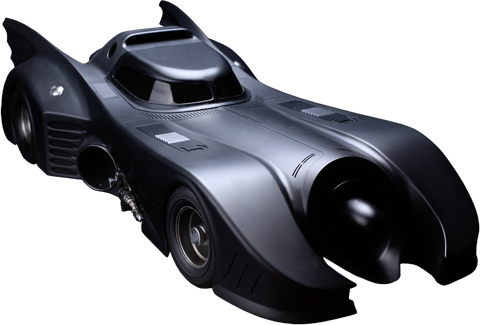 --- # Hva skjer hvis vi trenger enda en knapp? Eller enda et led? ```c const int buttonPin = 2; const int ledPin = 13; void setup() { pinMode(ledPin, OUTPUT); pinMode(buttonPin, INPUT); } void loop() { int buttonState = digitalRead(buttonPin); if (buttonState == HIGH) { digitalWrite(ledPin, HIGH); } else { digitalWrite(ledPin, LOW); } } ``` --- # En Button-klasse ## Button.h ```c #include "Arduino.h" class Button { public: Button(int pin); bool isDown(); private: int _pin; } ``` --- # En gjenbrukbar Button! ```c #include "Button.h" Button button(2); const int ledPin = 13; void setup() { pinMode(ledPin, OUTPUT); } void loop() { if (button.isDown()) { digitalWrite(ledPin, HIGH); } else { digitalWrite(ledPin, LOW); } } ``` --- # Hvordan virker det? 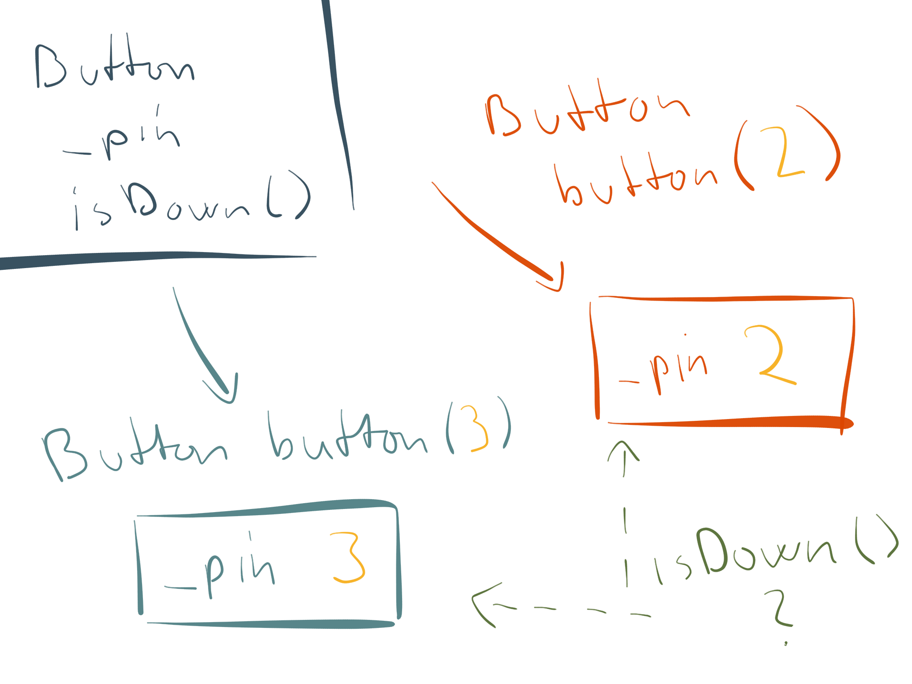 --- ## Led.h ```c #include "Arduino.h" class Led { public: Led(int pin); void on(); void off(); private: int _pin; } ``` -- ## Led.cpp ```c Led::Led(int pin) { _pin = pin; pinMode(_pin, OUTPUT); } void Led::on() { digitalWrite(_pin, HIGH); } void Led::off() { digitalWrite(_pin, LOW); } ``` --- # Hva, og ikke hvordan! ```c #include "Button.h" #include "Led.h" Button button(2); Led led(13); void setup() { } void loop() { if (button.isDown()) { led.on(); } else { led.off(); } } ``` --- template: heading # Bordtennis-prosjektet ## Et internet-enabled bordtennisbord! https://github.com/bekk/bekkboard --- # Teknologi ## Mini bordtennisbord ## Flipperspill-knapper festet til bordet ## RFduino med bluetooth low energy ## Raspberry PI med bluetooth dongle ## Node web server på Raspberry PIen ## Nettside som viser hvem som spiller, live score, nedtelling ## Elo ranking --- class: center 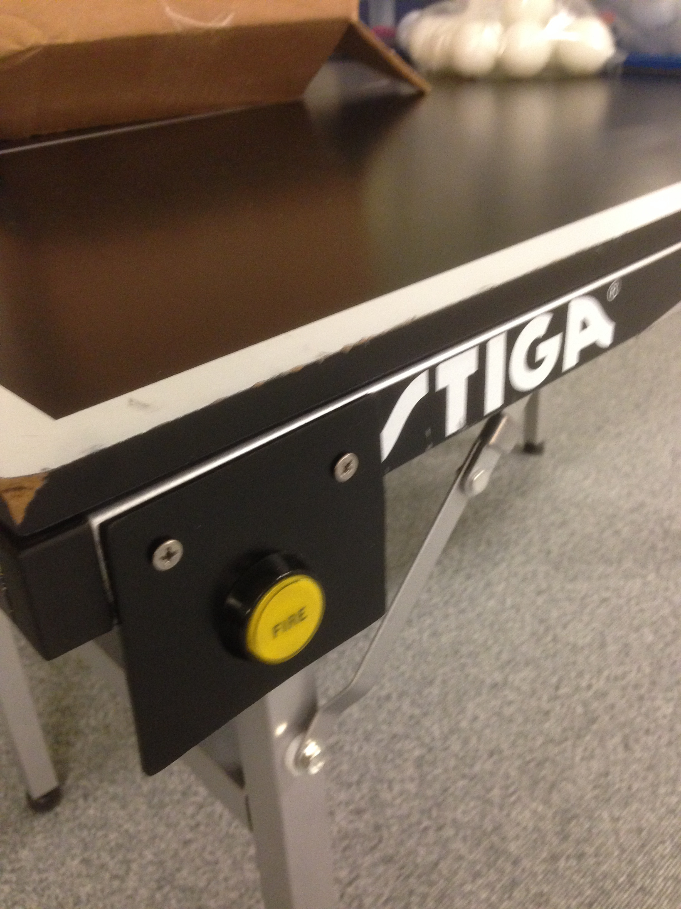 --- class: center 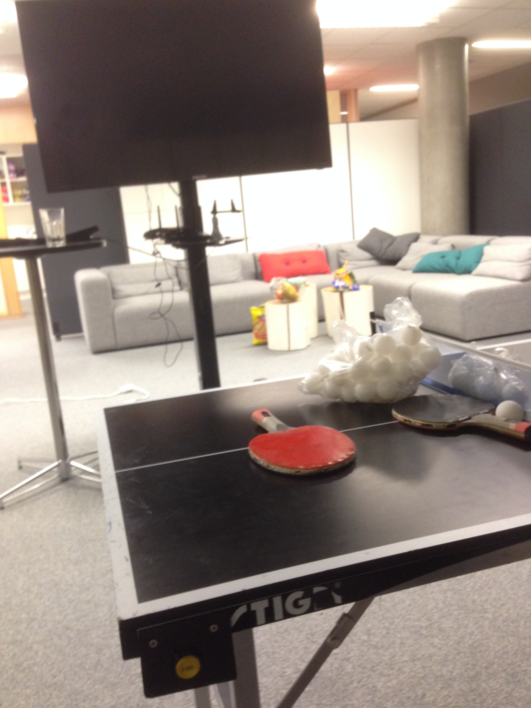 --- class: center 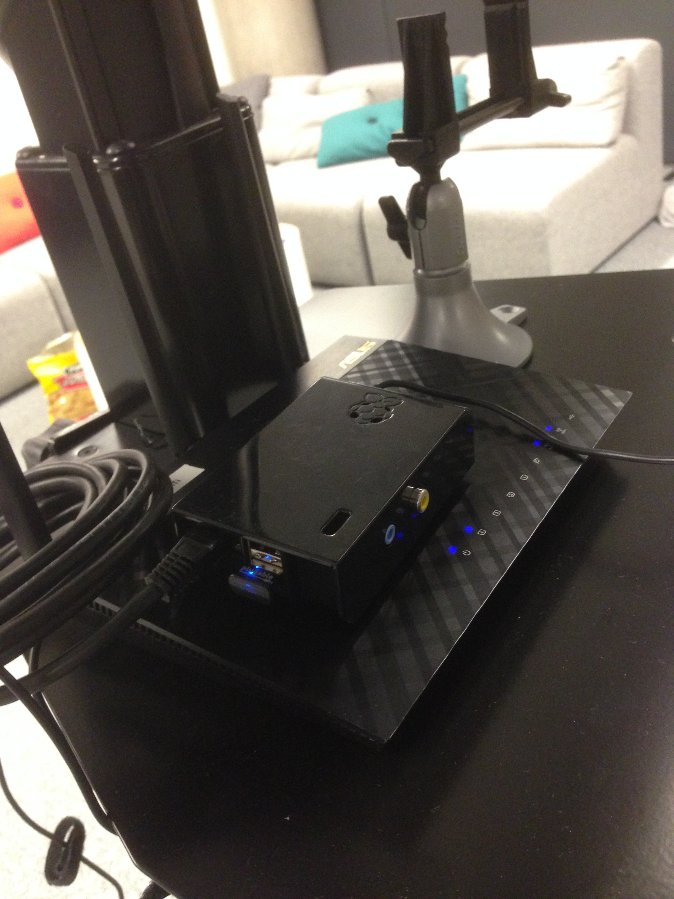 --- 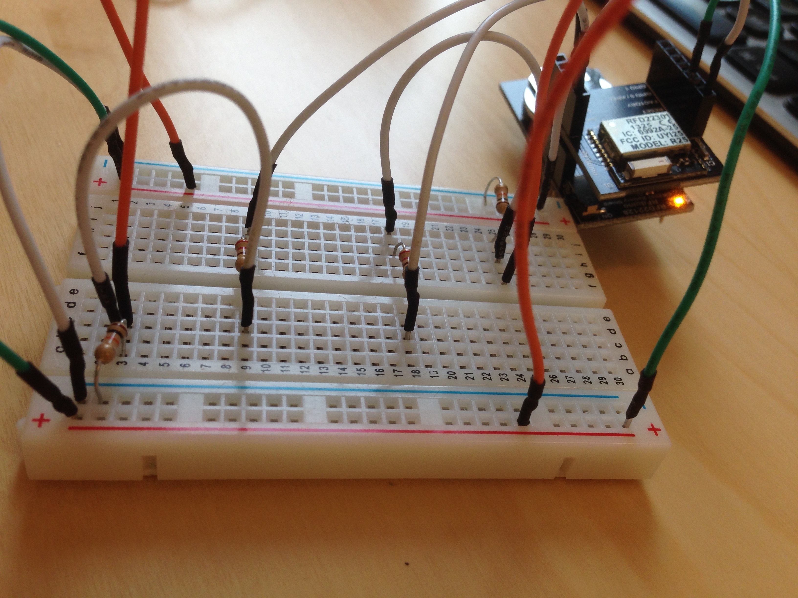 --- 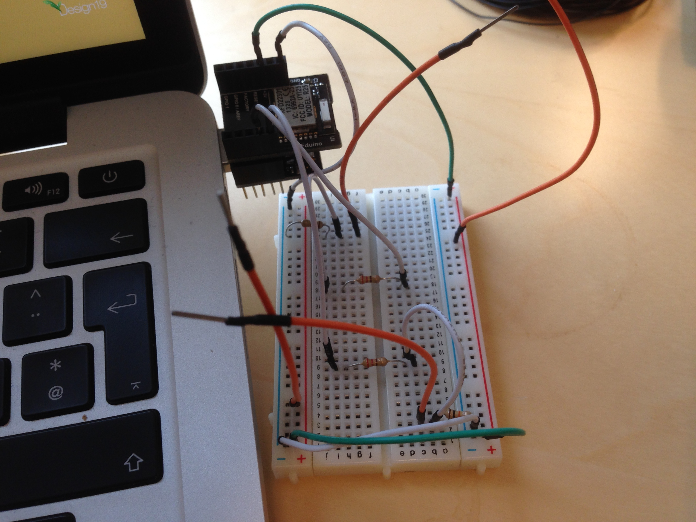 --- class: center 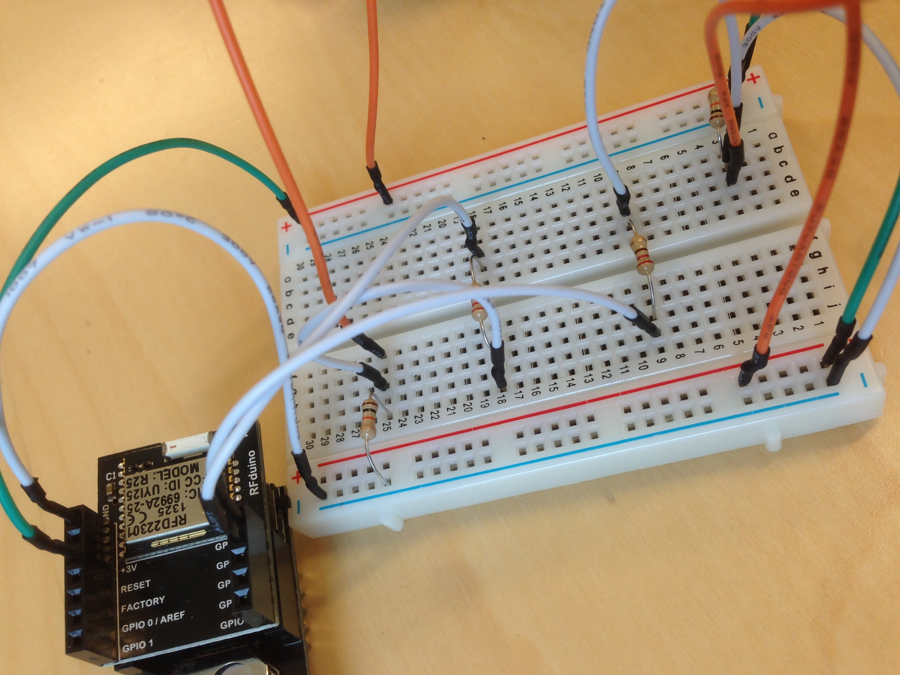 --- 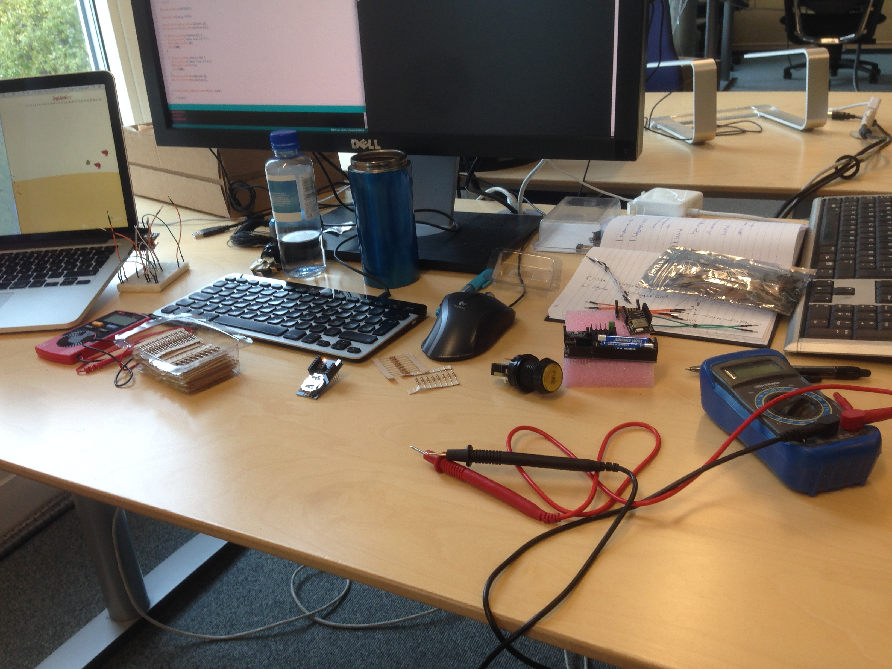 --- class: center 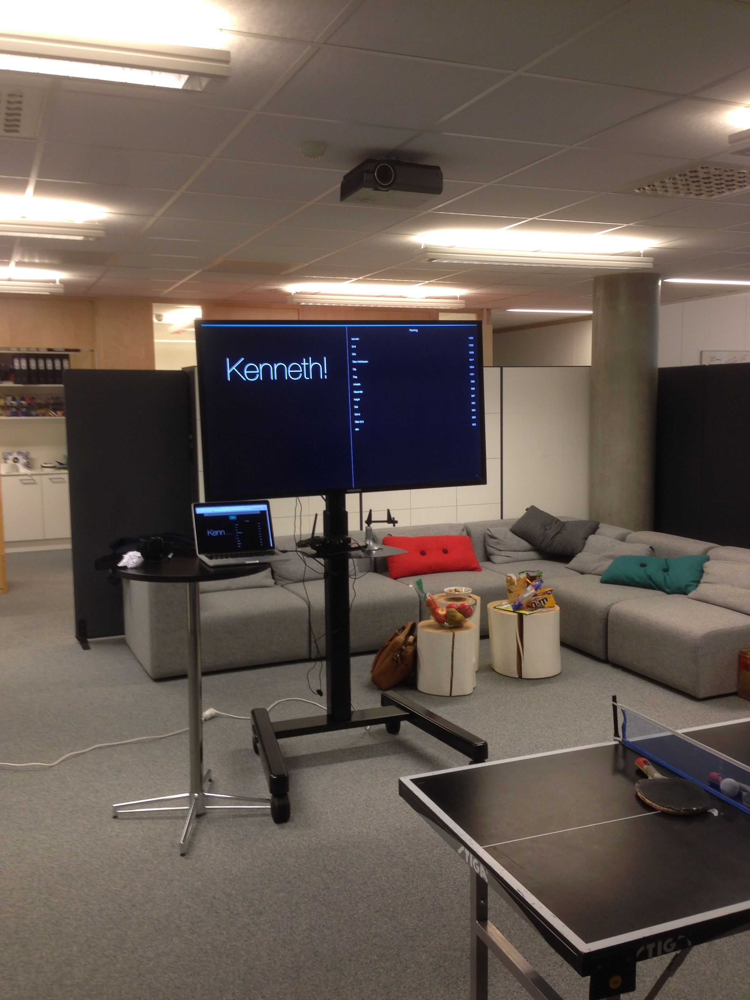 --- <img src="tdc-1.png"/> --- class: center 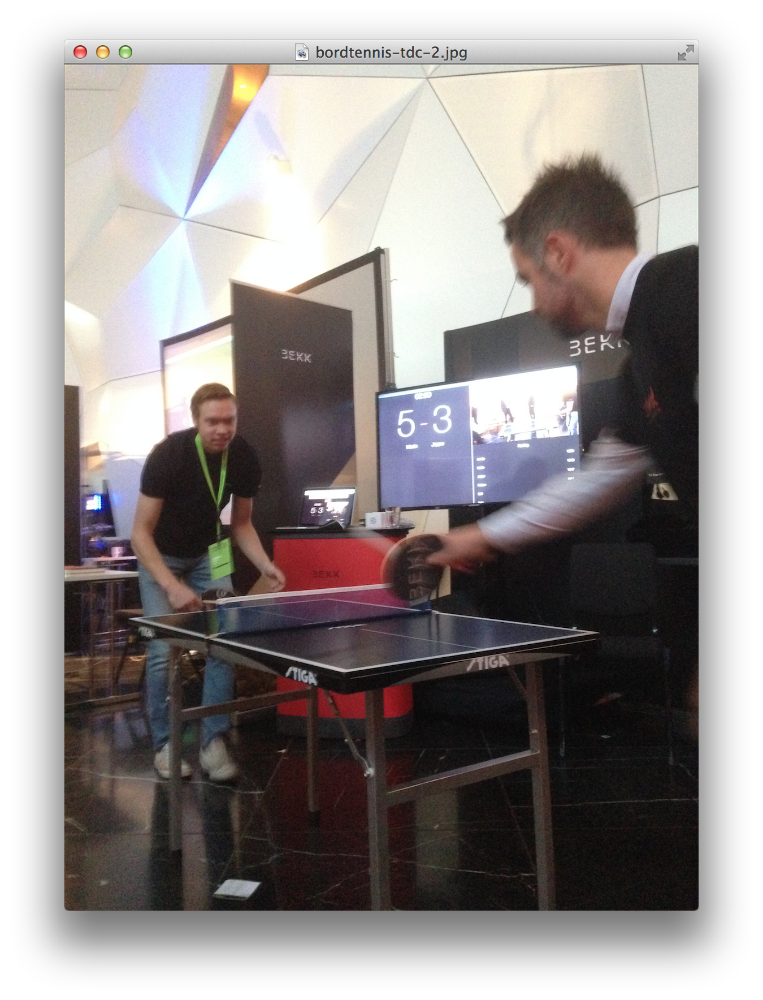 --- 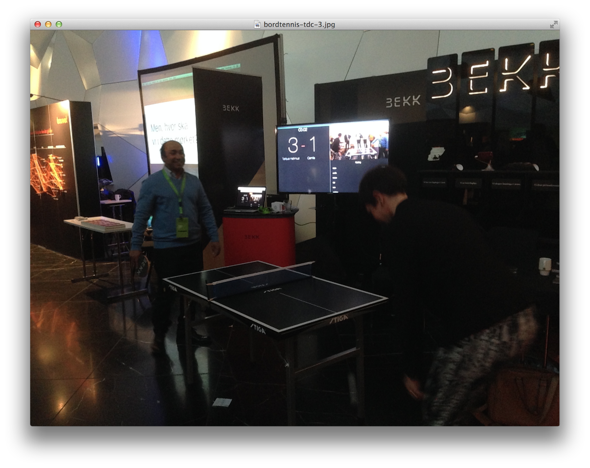 --- template: heading # Takk for meg! ## Torgeir Thoresen ## <a href="http://twitter.com/torgeir">@torgeir</a> --- # Jeremy Blum ## Arduino tutorials https://www.youtube.com/playlist?list=PLA567CE235D39FA84